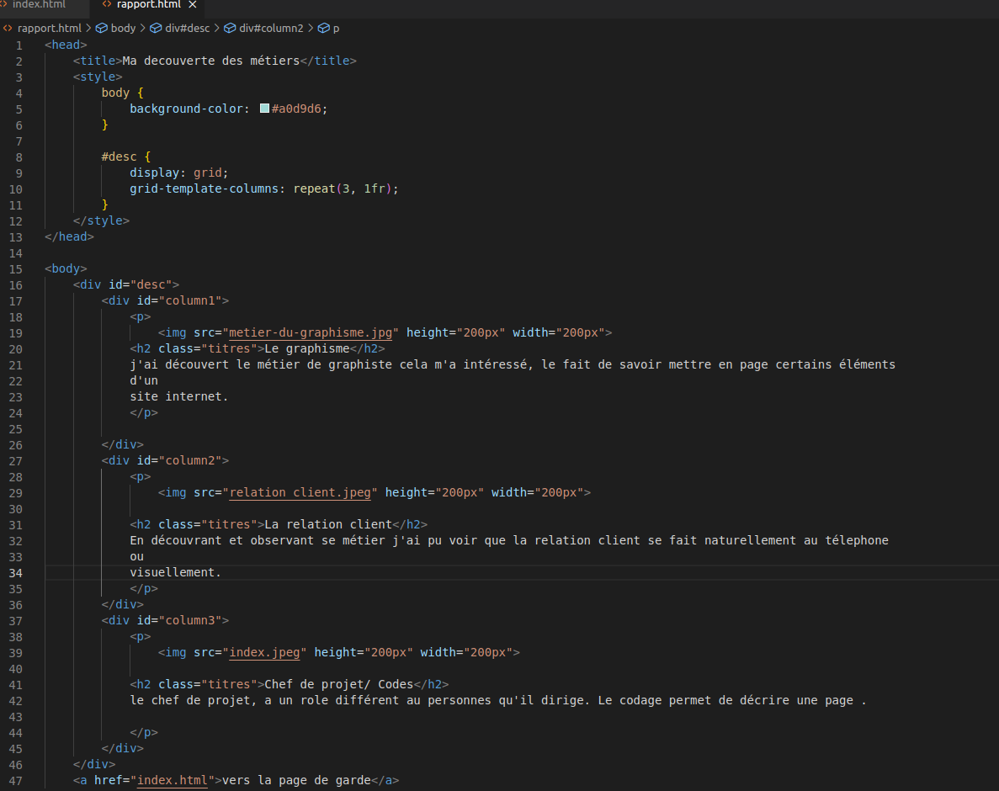

j'ai apprécié.
j'ai beaucoup aimé la relation qu'on peut créé avec les clients .
Que l'on puisse répondre à leurs besoins et etre à leur écoute.
Etablir une relation presque "amicale" avec eux.
Tous les métiers sont en rapport entre eux, sans l'aide d'un métier en particulié,
les autres seraient surement en diffivultés.

j'ai aussi beaucoup apprécié le fait que j'ai pu créé mon site, pouvoir essayer le "langage" code .
je n'ai pas apprécié
le faits que certains clients ne sont pas réactifs.
que certains métiers sois mis en avant plus que d'autres.
vers la page de garde
vers mon rapport